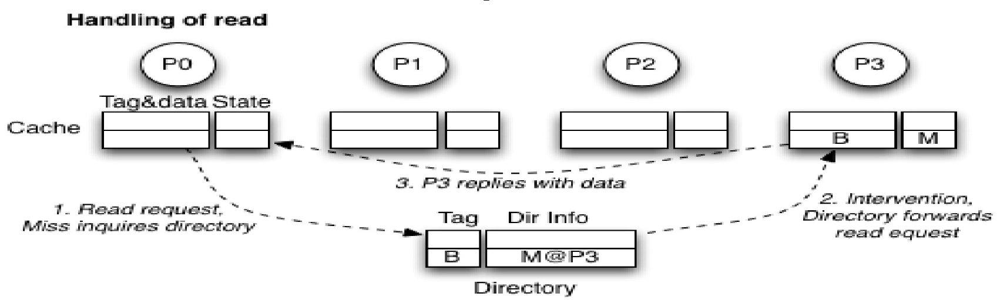
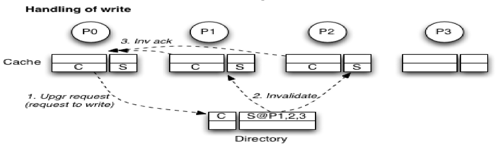
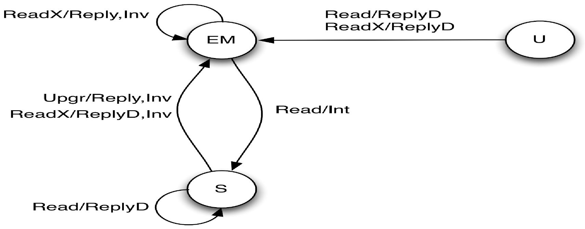
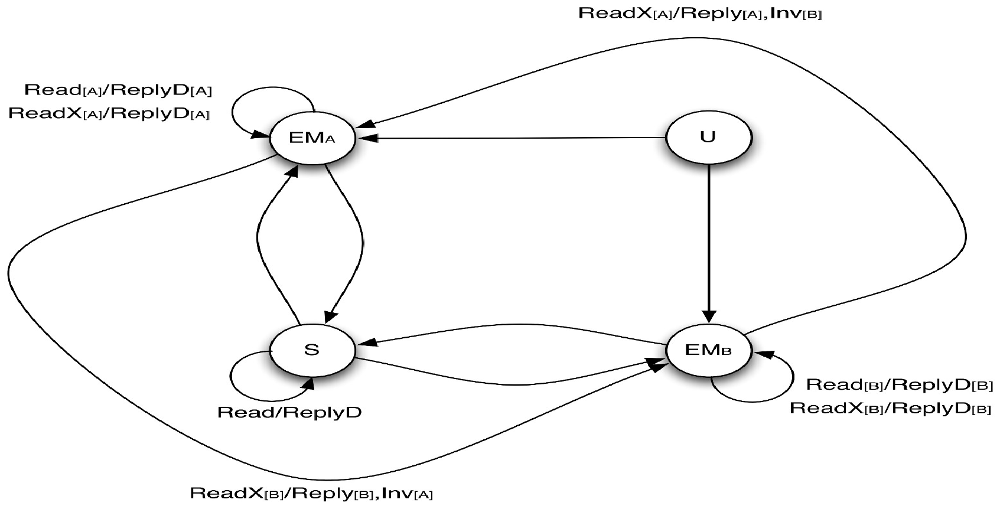
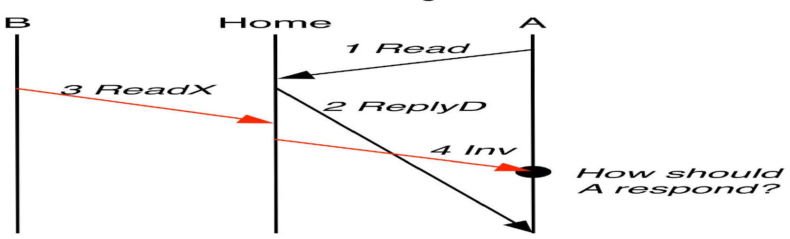
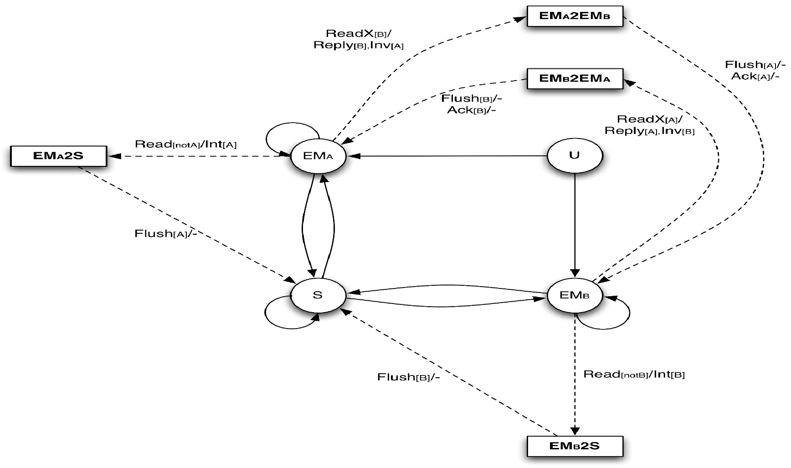
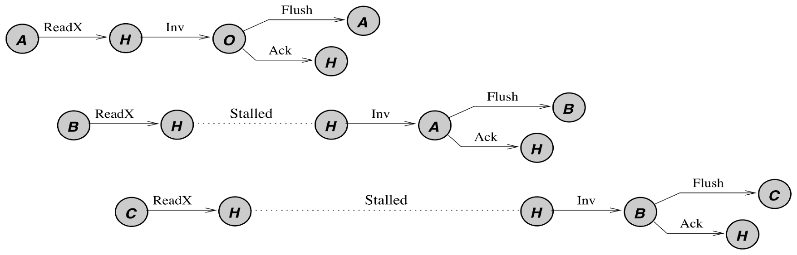

CSC / ECE 506 · Parallel Computer Architecture
Lecture 13–14
Distributed Shared Memory Multiprocessors
(Chapter 11 in Yan Solihin's textbook)
Objectives and Outline
- Objective
- Understand what scalable cache coherence requires, how distributed coherence protocols work, and issues in designing such protocols
- Outline:
- Module 10.1: basic directory protocol
- Module 10.2: handling protocol races
- [Module 10.3]: cache-based directory protocol
Module 10.1
Basic Directory Protocol
- Objective
- Understand how basic directory-based protocol works
- Outline:
- How to scale coherence protocols
- Basic directory coherence protocol design
- Issues: handling read/write, directory location, directory info, sharing information format (full bit, coarse vector, limited pointers, sparse directory)
- Working example
Scalable Shared Memory System
- Bus-based MP: Good for small multiprocessors, but does not scale
- Physical constraints
- long wires (low clock frequency), arbitration delay
- Protocol constraints
- Snoopy/broadcast: bandwidth getting saturated quickly
- Contention everywhere: bus, snooper, memory
- How to scale to larger MP?
Ways to Scale Bus-Based MP
| Interconnection |
|---|
| Bus | Point-to-point |
|---|
| Protocol | Snoopy | Least scalable | More scalable |
|---|
| Directory | | Most scalable |
|---|
- Approach 1: replace bus with point-to-point interconnection, but keep relying on snooping/broadcast
- e.g., AMD Opteron (mesh), IBM Cell (ring), Intel Larrabee (ring)
- Still cannot scale to hundreds of processors
- Approach 2: replace broadcast with directory protocol
- e.g. SGI Altix system
- Leads to distributed shared memory (DSM) multiprocessors
- Scaling to tens to hundreds of processors
How to Map Memory on DSM?
- Block interleaving?
- distributes data around
- Hard to exploit locality
- No interleaving?
- OS must be involved in deciding where to allocate a page
- with significant impact on performance
- First touch vs. round robin
Finding a Block
- A block can only map to a single memory
- This memory is referred to as the “home” of the block
- The home memory keeps track of which caches may have the copy of a block
- in a structure called the “directory”
- Where is directory stored?
- Memory (entirely) vs. Memory+cache
- Centralized vs. distributed
Basic Directory Handling of a Load Request

- 1: Requestor (P0) sends a Read request to the Home (i.e. where directory is)
- 2: Home looks up the directory to find out who has the block and in what state. Then it sends an intervention request to the current owner (P3)
- 3: The owner (P3) supplies the block to the requestor (P0) and may update the home as well
Basic Directory Handling of a Write Request

- 1: Requestor (P0) sends a Write request to Home
- 2: Home finds out that P1 and P2 are currently sharers, then it sends invalidation messages to them
- 3: Sharers (P1 and P2) reply with Invalidation Acknowledgement to P0
Directory Location Choices
What Info in the Directory
- Information that must be kept at the directory
- Which caches are currently sharers or owner
- Which state the block is currently cached
- Ideally, if the caches support MESI states, then the directory keeps MESI states as well
- But:
- Transition from E to M in a cache is silent
- Hence, the directory cannot tell if a block is cached in E or M state
- Hence, the directory may keep 3 states
- E/M: if the block is cached in E or M state
- S: if the block is cached cleanly in S state
- U: if the block is uncached or cached in invalid state
Performance Criteria
- Main criteria:
- Traffic on invalidations
- Latency of invalidations
- Storage overheads
- Less important criteria:
- Traffic on interventions
- Latency of interventions
- Invalidation involves multiple sharers vs. intervention involves a single owner
Example
- Cache State: MESI
- Directory:
- Full-bit Vector
- 3 States:
- EM (Exclusive or Modified)
- S (Shared)
- U (Unowned)
Full Bit-Vector: Example
- Coherence messages
- Issued by requesting processor:
- Read: read request
- ReadX: read exclusive (or write) request
- Upgr: upgrade request
- Issued by home:
- ReplyD: home replies with data to requestor
- Reply: home replies not containing data
- Inv: home asking sharer to invalidate
- Int: home asking owner to flush and change to S
- Issued by owner of a cache block:
- Flush: owner flushes data to home + requestor
- InvAck: sharer/owner ack Invalidation msg
- Ack: acknowledgement of receipt of non-inval msg
State Transition at the Directory

- Legend:
- <Request-msg>/<Reply-msg1>,<Reply-msg2>
Full-bit Vector Protocol Visualization
Example
| Proc Action | State P1 | State P2 | State P3 | Dir State @Home | Network Msg | Hops |
|---|
| R1 | E | - | - | EM, 100 | Read (P1->H), ReplyD (H->P1) | 2 |
| W1 | M | - | - | EM, 100 | - | 0 |
| R3 | S | - | S | S, 101 | Read (P3->H),
Int (H->P1),
Flush (P1->H, P3) | 3 |
| W3 | I | - | M | EM, 001 | Upgr (P3->H),
Reply (H->P3) // Inv (H->P1),
InvAck(P1->P3) | 3 |
| R1 | S | - | S | S, 101 | Read (P1->H),
Int (H->P3),
Flush (P3->H, P1) | 3 |
| R3 | S | - | S | S, 101 | - | 0 |
| R2 | S | S | S | S, 111 | Read(P2->H),
ReplyD(H->P2) | 2 |
Note
- Many transactions can be sent in parallel
- vs. snoopy coherence
- Much more complicated (more msgs types)
- Protocol races can occur (discussed later)
- Some requests require 3 hops (vs. 2 in SMP)
- FlushOpt in snoopy protocol MESI no longer needed because the block is supplied by home when clean
- Reply by home to node that issues a write request
- Enables requestor to collect invalidation acknowledgements
- Enables 3 hops instead of 4 hops
- Called “Reply Forwarding” scheme
Overheads of Full Bit-Vector Scheme
- Traffic on a write
- Latency on a write
- O(1) because Invalidations sent in parallel to sharers
- But higher than SMP due to InvAck
- Storage overhead
- doesn’t scale well
- E.g. 64-byte line implies
- 64 nodes: 12.5% ovhd.
- 256 nodes: 50% ovhd.; 1024 nodes: 200% ovhd.
- Total storage overhead = O(p2)
- p bits per line, number of lines increases with p
Reducing Storage Overhead 1
- Simple Optimizations
- Coarse Vector
- Use multiprocessor nodes (1 bit per group)
- Storage overhead: O(p2/g) where g is group size
- 256-procs, 4 per cluster, 128B line: 6.25% ovhd.
- Limited pointer scheme: storage O(numptr * log2p * p)
- Home has numptr pointers to sharers
- P=1024 => 10 bit ptrs, even 100 pointers still save space
- Few sharers mean few pointers enough (five or so)
- When overflow (i.e. sharers > pointers)?
Overflow Schemes for Limited Pointers
- Broadcast
- Overflow bit set
- Resort to broadcast
- Invalidate old sharers to fit max #sharers
- on overflow, make room for new sharer by invalidating one of the old ones
- Coarse vector
- On overflow, resort to coarse vector scheme
- Write invalidation sent to all nodes that a bit corresponds to
Sparse Directories
- Observation: total number of cache entries << total amount of memory.
- most directory entries have uncached (U) state
- Sparse directory: only keep directory entries that have non-U states
- Organize directory as a cache
- If a block will be cached, allocate an entry in the directory
- However, it can overflow
- Cached blocks can be replaced silently by caches
- The directory does not see these replacement events, so it cannot free the entry
- Handling overflow: send invalidations to all sharers when entry replaced (simpler)
Directory Information Format non Exclusive
- We can employ several formats simultaneously
- For example, in Origin2000 (2 procs form a node):
- (1) Exclusively cached: dir entry is pointer to that specific processor
- (2) Shared: bit vector, each bit stores node id (not processor id)
- Invalidation to a Hub is broadcast to both processors in the node
- Two sizes and storage
- 16-bit format (32 procs), kept in main memory DRAM
- 64-bit format (128 procs), extra bits kept in extension memory
- (3) Larger machines: coarse vector, each bit corresponds to p/64 nodes
- Invalidation is sent to all Hubs in that group, each hub bcast to its 2 procs
- Machine chooses between bit vector and coarse vector dynamically
Module Review Questions
How does a directory protocol achieve better scalability than a broadcast/snoopy protocol?
Directory filters traffic so that only owner/sharer caches get involved in a transaction. In contrast, in a broadcast protocol, all cache controllers get involved.
Why can’t the directory distinguish between Exclusive and Modified state in the caches?
The transition from Exclusive to Modified in MESI protocol in a cache is silent, hence without modifying the MESI protocol, the directory is not able to distinguish the two states.
Why is directory storage overhead a scalability challenge, and what techniques help mitigate that?
- For each cache block, the possible number of sharers increases with the number of caches, requiring larger storage overhead to record sharer information
- Mitigation techniques: coarse directory, limited pointer, and sparse directory. Overflow policy is required for limited pointer and sparse.
Module 10.2
Handling Protocol Races
- Objective
- Understand several protocol races and how to mitigate them
- Outline:
- Races due to out of sync directory
- Races due to non-atomic message delivery
- Write propagation and serialization
- Home-centric and requestor-assisted
Assumptions So Far
- We have assumed
- Directory state reflects the most up to date state of caches
- Messages due to a request are processed atomically
- In reality, one of or both conditions may be violated
- => protocol races can occur
- Some protocol races can be handled in a simple way
- Others are trickier to handle
- We will discuss how protocol races can be handled
- Purpose of discussion: illustrating approaches for dealing with protocol races
- Discussing all possible races is not the goal (i.e., some races are left out in the discussion)
Handling Races: Out-of-sync Directory
- Home sends invalidation to a node that has replaced the block silently
- The node can reply with InvAck
- Home receives a read request from a node that is already a sharer from the home point of view
- Directory can reply with data (ReplyD)
- Home receives a read/write request from a node that the home thinks as the owner (EM state)
- If the block was clean, it has been replaced silently
- If the block was dirty, the Flush (or write back) has yet to reach the home
- What should the home do?
- Wait? The block may never come
- Reply with data? The data may be stale
Handling Races: Out-of-sync Directory
- The home alone cannot solve this. Individual nodes must participate in the solution
- Keep outstanding transaction buffer for any Flush message
- Require Home to acknowledge the receipt of a Flush
- Delay Read/ReadX request to a block that is still being written back
- Hence, home only receives Read/ReadX to a block that is not being written back
Protocol Modification

- Format: RequestMsg[Requestor]/ReplyMsg1[Destination],ReplyMsg2[Destination]
- Split EM into two states: EMA and EMB
- Distinguish handling Read/ReadX requests from current owner or others
Handling Races: Non-Atomic Messages

- 1: A sends a read request to Home
- 2: Home replies with data (but the message gets delayed)
- 3: B sends a write request to Home
- 4: Home sends invalidation to A, and it arrives before the ReplyD
- Called “Early Invalidation” race
How Should A Respond?
- Two incorrect ways to respond:
- A replies with InvAck,
- B thinks that its write propagation is complete
- A receives a ReplyD and places the block in its cache (the block that should have been invalidated)
- A ignores the Invalidation message
- The message is lost, and write propagation has failed to occur
- Solution
- Brute force: avoids overlapped handling of requests. Home waits until it receives Ack from all parties (Home-centric)
- Allows overlapping but asks nodes to participate (Requestor-assisted)
- Node keeps outstanding transaction buffer
- It does not entertain requests (to the same block) until the current transaction is completed
Processing a Read Request
- Home-centric (Read to clean block)
- Directory enters a transient state
- Home replies with data
- Requestor receives data, sends Ack to Home
- Home closes transaction (transitions to a stable state, update sharing vector)
- Cons: too much serialization at home, transaction closed late, and it requires Ack
- Requestor-assisted (Read to clean block)
- Directory sends ReplyD, then closes transaction
- Requestor buffers/NACKs all new requests until the current Read transaction is completed (ReplyD received)
Processing a Read Request
- Home-Centric (Read to EM block)
- Requestor sends Read to Home
- Home enters a transient state, sends intervention to Owner
- Owner flushes block to Home and Requestor
- Requestor sends Ack back to Home
- Home closes transaction (transitions to Shared state, updates sharing vector)
- Requestor-assisted (Read to EM block)
- Requestor sends Read to Home
- Home enters a transient state, sends intervention to Owner
- Home cannot close the transaction yet, because in the final state (Shared), it must have a clean copy of the block
- Owner flushes block to Home and Requestor
- Upon receiving the block from Owner, Home closes transaction
Processing a Write Request
- Home-centric (ReadX to U block)
- Requestor sends ReadX request
- Home replies with data
- Requestor sends Ack
- Home closes transaction
- Requestor-assisted (ReadX to U blk)
- Requestor sends ReadX request
- Home sends ReplyD and closes transaction
- Home-centric (ReadX to Shared blk)
- Home enters transient state and sends Inv messages
- InvAcks must be collected at Requestor and Requestor notifies Home, or collected at Home
- Then, home closes transaction
- Requestor-assisted (ReadX to Shared blk)
- Home sends Invs and closes the transaction
- InvAcks collected at Requestor
- Requestor buffers/NACKs new requests until it receives all InvAcks
Processing a Write Request
- Home-Centric (ReadX to EM block)
- Home enters transient state and sends Inv messages
- InvAcks must be collected at Requestor and Requestor notifies Home, or collected at Home
- Then, home closes transaction
- Requestor-Assisted (ReadX to EM block)
- Requestor sends ReadX request to Home
- Home sends Invalidation request to Owner, and closes the transaction
- Owner flushes the block to Requestor
- Requestor buffers/NACKs new requests until it receives the block from the old Owner
Processing a Write Request
- However, a problem remains:
- What if the current Owner no longer has the block?
- Either it had it in Modified state and it is writing the block back
- or it had it in Exclusive state and it has evicted the block silently
- Home cannot close the transaction yet, as it may have to supply the block
- Hence, it can close the transaction late, after it receives Ack from Owner
- Transient states needed each time a transaction cannot be closed instantly
- EM2S: transitioning from EM to S
- EM2EM: transitioning from EM to EM (but different owner)
New Coherence State Diagram

Write Propagation and Serialization

- Write propagation is achieved through invalidation
- Multiple writes to a block are serialized by the protocol
- Transaction closes after the Ack from current Owner is received by Home
- New ReadX request is not served until the previous ReadX request is closed
- This provides write serialization
Synchronization Support
- Atomic instructions
- Can be supported by entering a transient state at Home until the instruction is completed
- LL/SC pair
- No change is needed at the directory
- In-memory atomic operation
- If directory controller can perform simple operations (increment, compare, add), it can perform atomic operation there, and
- Allocate synchronization variables in a non-cacheable page
- Pros: no invalidation and subsequent cache misses occur (O(p) complexity)
- Cons: performs worse under little-contention scenarios (due to a long distance and lack of temporal locality)
Memory Consistency Models
- SC implementation
- Write completion detected when all InvAcks are collected
- Prefetching and load speculation are applicable
- As # processors grow
- Average latency of a cache miss increases
- Harder to hide it
- Hence, benefits of more relaxed consistency models increase vs. SC
Module Review Questions
What are two sources of protocol races?
- Out of sync directory: directory no longer reflects the states in the cache
- Non-instantaneous transaction processing: directory may overlap the processing of multiple transactions
What is the general strategy dealing with protocol races?
- Add transient states to protocol if transaction cannot be closed immediately
- NACK requests if state is transient
- Enlist nodes to help resolve ambiguity in races (via outstanding transaction buffers)
Module 10.3
Cache-Based Directory Protocol
Flat, Cache-based Schemes
- How they work:
- Sharers are linked as a linked list
- home only stores the head pointer
- cache stores the next sharer in the list
- on read, add yourself to head of the list (comm. needed)
- on write, propagate chain of invals down the list
- Scalable Coherent Interface (SCI) IEEE Standard
Assumptions
- SCI (Scalable Coherent Interface) protocol
- IEEE standard, ratified in 1992
- 3 sets of protocols: minimal, typical, full
- 7 state bits, 29 stable states + many pending states
- For illustration: Simple SCI (SSCI)
- Retain similarity with full-bit vector protocol:
- MESI states in the cache
- U,S,EM states in the memory directory
- Replace the presence bits with a pointer
- Similar features with SCI
- Overall protocol operation
- Doubly linked list
- Many possible race conditions
- Mostly ignored in the illustration
SSCI: Example
- Coherence Network Transactions: add
- WB+Int+UpdPtr
- UpdPtr: update next/prev/head pointers
SSCI Protocol Visualization
SSCI Example
| Proc Action | State P1 | State P2 | State P3 | Dir State @Home | Network Msg | Hops |
|---|
| R1 | E,0,0 | - | - | EM, 1 | Read (P1->H), ReplyD (H->P1) | 2 |
| W1 | M,0,0 | - | - | EM, 1 | - | 0 |
| R3 | S,3,0 | - | S,0,1 | S, 3 | Read (P3->H),
ReplyID (H->P3),
WB+Int+UpdPtr (P3->P1),
Flush (P1->H, P3) | 4 |
| W3 | I,3,0 | - | M,0,0 | EM, 3 | Upgr (P3->H) // Inv (P3->P1)
InvAck(P1->P3) | 2 |
| R1 | S,0,3 | - | S,1,0 | S, 1 | Read (P1->H),
ReplyID (H->P1),
WB+Int+UpdPtr (P1->P3),
Flush (P3->H, P1) | 4 |
| R3 | S,0,3 | - | S,1,0 | S, 1 | - | 0 |
| R2 | S,2,3 | S,0,1 | S,1,0 | S, 2 | Read (P2->H),
ReplyD/ID (H->P2),
UpdPtr(P2->P1) | 3 |
Observations
- Cache-based vs. Memory-based directory
- Disadvantages
- Read to “Shared” data has higher latency and traffic, due to pointer updates
- Read to “Modified” data needs 4 hops
- Can be reduced to 3 if home forwards the read request to owner
- Write invalidation latency is O(sharers)
- Replacement incurs pointer update
- Advantages
- Small storage overhead
- Linked list can be used to support fairness
- Distributed invalidation
- Protocol race conditions
- Quite a few more
- Pointer updates and state transition have to be atomic
Scaling Properties (Cache-based)
- Traffic on write: O(sharers)
- Latency on write: O(sharers)
- don’t know identity of next sharer until reach current one
- also assist processing at each node along the way
- (even reads involve more than one other assist: home and first sharer on list)
- Storage overhead: quite good scaling along both axes
- Only one head ptr per memory block
- rest is all proportional to cache size
- Other properties (discussed later):
- good: mature, IEEE Standard, fairness
- bad: complex
Comparisons (Fill as Homework)
| Bus-based broadcast | Full bit-vector | Coarse bit-vector | Limited Pointers | Cached dirs (sparse directory) | SCI |
|---|
| Traffic (#msgs on inval) | O(1) | | | | | O(sharers) |
| Write inval latency | O(1) | | | | | |
| Storage overheads | zero | Mp2 bits | | | | |
p = num processors
g = group size (num procs represented by 1 bit)
M = number of memory lines per processor/node
C = number of cache lines per processor
*: O(p) total num cache lines * O(p) bits(procs)/line
Comparisons
| Bus-based broadcast | Full bit-vector | Coarse bit-vector | Limited Pointers | Cached dirs (sparse directory) | SCI |
|---|
| Traffic (#msgs on inval) | O(1) | O(sharers) | O(sharers) | O(sharers) | O(sharers) | O(sharers) |
| Write inval latency | O(1) | O(1) | O(1) | O(1) | O(1) | O(sharers) |
| Storage overheads | zero | Mp2 bits | Mp2/g | M p (log2p * num ptrs) | kMp2 | Mem: M p log2p
Cache: 2 C p log2p |
| O(overheads) | - | O(Mp2) | O(Mp2/g) | O(Mp log p) | O(Cp2) if kM=C | O(M p log p) |
p = num processors
g = group size (num procs represented by 1 bit)
k = fraction of directory entries that is cached
*: O(p) procs * M memory lines/proc * O(p) bits/line
**: In directory: O(p) procs * O(M) lines/proc * O(log2p) bits/line
In cache : O(p) procs * O(C) lines/cache * O(log2p) bits/line
If O(C) = O(log M), then the total is O(Mp log2p)
Finally, O(M) is likely to be constant, so can remove M from all
References
Course textbook
Yan Solihin, Fundamentals of Parallel Multicore Architecture, Chapman & Hall/CRC, 2015.